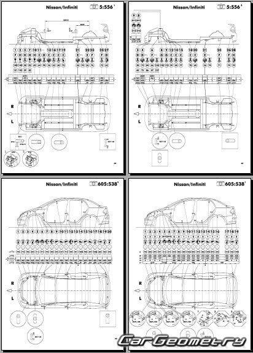

Nissan Vesta 2019 года

Nissan Versa — это субкомпактный седан (ранее также хэтчбек),
ориентированный в основном на рынки Северной и Южной Америки, известный своей доступностью,
просторным салоном («versatile space») и экономичностью. Современное поколение (с 2019 года) оснащается 1.
6-литровым бензиновым двигателем мощностью
л.с., 5-ступенчатой МКПП или вариатором CVT.
